철도토목산업기사 (2003-05-25 기출문제)
1과목: 철도공학
1. 분기기의 구조를 구분하는 것으로 해당되지 않는 것은 ?
- 포인트부
- 리드부
- 가드부
- 크로싱부
(정답률: 알수없음)

2. 장대레일에서 설정온도 20℃인 구간에 레일온도 -20℃때 부동구간의 레일축력은? (단, A = 65cm2, β = 0.000012/℃, E = 2,000,000kg/cm2 )
- 62.4 ton
- 52.4 ton
- 64.4 ton
- 54.4 ton
(정답률: 알수없음)
3. 플레이트 거더의 교량에 60mm의 캔트를 부설할 때 패킹으로 조정되는 캔트량은 ?
- 20mm
- 30mm
- 40mm
- 60mm
(정답률: 알수없음)
4. 정차장 설비에 있어서 두단식 외에 종단역의 배선으로 볼 수 있는 것은 ?
- 단식
- 섬식
- 상대식
- 관통식
(정답률: 알수없음)
5. 곡선반경이 800m인 곡선궤도에서 열차가 100㎞/h로 주행시 산출 캔트량은 얼마인가? (단, c'=40mm임.)
- 108mm
- 112mm
- 118mm
- 120mm
(정답률: 알수없음)
6. 철도의 수송능력을 나타내는 1일 열차회수의 선로용량 산정의 종류가 아닌 것은 ?
- 실용용량
- 표준용량
- 경제용량
- 한계용량
(정답률: 알수없음)
7. 장대레일 이음매 방법 중 신축이음매의 종류가 아닌 것은?
- 양측둔단중복형
- 편측첨단형
- 이형레일형
- 양측첨단형
(정답률: 알수없음)
8. 다음 중 유간정정 작업의 종류가 아닌 것은 ?
- 간이정리
- 소정리
- 중정리
- 대정리
(정답률: 알수없음)
9. 전차선로는 전기차의 집전장치를 통하여 전력을 공급할 목적으로 궤도를 따라 시설하는 것으로서 우리나라에서의 전차선로 구성은 어떤식을 표준으로 하고 있는가?
- 가공단선식
- 가공복선식
- 제3궤조식(저전압)
- 강체복선식
(정답률: 알수없음)
10. 도상재료의 구비조건으로 옳지 않은 것은?
- 둥글고 입자간의 마찰력이 적을 것
- 단위중량이 크고 값이 쌀 것
- 점토 및 불순물의 혼입이 적을 것
- 입도가 적정하고 도상작업이 용이할 것
(정답률: 알수없음)
11. 열차속도가 지정속도보다 높아지면 자동으로 제동이 작용하여 일정속도의 열차운행을 하게하는 장치는?
- 차내 경보장치
- 자동 열차정지장치(A.T.S)
- 자동 열차제어장치(A.T.C)
- 자동 열차운행장치(A.T.O)
(정답률: 알수없음)
12. 다음중 궤도에 속하지 않는 것은 ?
- 레일
- 침목
- 도상
- 노반
(정답률: 알수없음)
13. 속도향상을 위한 선로의 대책 중 평면선형에 대한 대책으로 맞지 않는 것은 ?
- 곡선반경을 될 수 있는 한 크게 한다.
- 캔트를 될 수 있는 한 크게 한다.
- 캔트 부족량을 될 수 있는 한 크게 한다.
- 곡률 변화구간과 캔트 변화구간이 일치하는 쪽이 바람직하다.
(정답률: 알수없음)
14. 한번 설정한 장대레일 체결장치를 모두 풀어서 레일의 신축을 자유롭게 한 다음 다시 체결하는 것은?
- 재설정
- 신축체결
- 부동체결
- 이중탄성체결
(정답률: 알수없음)
15. 선로점검중 궤도재료 점검시 불량판정의 기준으로 옳은 것은 ?
- 목침목 : 박힘의 삭정량이 10mm 이상된 것
- 스파이크 : 부식으로 15%이상 중량이 감소된 것
- 타이플레이트 : 바닥턱이 3mm이상 마모된 것
- 이음매판의 볼트 및 너터 : 부식으로 5%이상 중량이 감소된 것
(정답률: 알수없음)
16. 궤도 응력 계산시 레일에 대한 응력 검토는 일반적으로 어느 부분에 대하여 검토하는가 ?
- 레일 두부의 압축응력
- 레일 두부의 인장응력
- 레일 복부의 인장응력
- 레일 저부의 인장응력
(정답률: 알수없음)
17. 어느 산악철도에 낙석이 심하여 항구적인 대책을 수립하고자 한다. 다음 중 가장 확실한 방안은 ?
- 낙석방지철책
- 낙석방지옹벽
- 피암터널
- 숏크리트에 의한 암석고정
(정답률: 알수없음)
18. 레일의 두면(頭面) 약 20mm를 소입시켜 솔바이트 조직으로 한 특수레일의 종류는 ?
- 고탄소강레일
- 경두레일
- 망간레일
- 복합레일
(정답률: 알수없음)
19. 철도계획에서 선로용량 산정시 고려할 사항중 옳지 않은 것은 ?
- 열차의 속도 및 속도차
- 역간거리 및 구내배선
- 신호현시 및 폐색방식
- 열차의 연결량수
(정답률: 알수없음)
20. 정차장 위치 선정시 옳지 않은 것은 ?
- 여객과 화물이 집산되는 곳
- 장래확장 및 개량이 용이한 곳
- 정차장에 인접해서 급구배, 급곡선이 없을것
- 정차장간 거리는 일반철도에서 10-20km 정도에 설치
(정답률: 알수없음)
2과목: 측량학
21. 다음 중 지구자원탐사위성으로부터 얻어진 영상의 활용분야로 가장 거리가 먼 것은?
- 수자원조사
- 환경오염조사
- 수온의 분포상태
- 두 점간의 정밀한 거리측정
(정답률: 알수없음)
22. 25mm의 외심오차가 있는 앨리데이드로 축척 1/200인 측량을 할 때 외심오차로 인해 도상에는 얼마의 위치오차가 생기는가?
- 0.063mm
- 0.125mm
- 0.188mm
- 0.300mm
(정답률: 알수없음)
23. 도로의 단곡선 계산에서 교점까지의 추가거리와 교각을 알고 있을 때 곡선시점의 위치를 구하기 위해서는 다음 요소중 어느 것을 계산하여야 하는가 ?
- 접선장(T.L)
- 곡선장(C.L)
- 중앙종거(M)
- 접선에 대한 지거(Y)
(정답률: 알수없음)
24. 삼각형의 내각 α, β, γ를 각각 다른 무게로 측정할 때 각각의 최확치를 구하는 방법 중 가장 옳은 것은?
- 등배분한다.
- 각의 크기에 비례하여 배분한다.
- 무게에 비례하여 배분한다.
- 무게에 반비례하여 배분한다.
(정답률: 알수없음)
25. 그림과 같이 0점에서 같은 정도로 각을 관측하여 다음과 같은 결과를 얻었을 때 보정값으로 옳은 것은 ? (단, x3 - (x1 + x2) = +45")
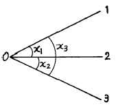
- x1 : - 22.5", x2 : - 22.5", x3 : + 22.5"
- x1 : - 15", x2 : - 15", x3 : + 15"
- x1 : + 22.5", x2 : + 22.5", x3 : - 22.5"
- x1 : + 15", x2 : + 15", x3 : - 15"
(정답률: 알수없음)
26. 수준측량에서 전시와 후시의 시준거리를 같게 함으로써 소거할 수 있는 오차는 ?
- 시준축이 기포관축과 평행하지 않기 때문에 발생하는 오차
- 표척 눈금의 오독으로 발생하는 오차
- 표척을 연직방향으로 세우지 않아 발생하는 오차
- 시차에 의해 발생하는 오차
(정답률: 알수없음)
27. 완화곡선설치에 관한 다음 설명 중 틀리는 것은?
- 반지름은 무한대로부터 시작하여 점차 감소되고 소요의 원곡선에 연결된다.
- 완화곡선의 접선은 시점에서 직선에 접하고 종점에서 원호에 접한다.
- 완화곡선의 시점에서 칸트는 0이고 소요의 곡선점에 도달하면 어느 높이에 달하고 그 사이의 변화비는 일정하다.
- 완화곡선의 곡률은 곡선의 어느 부분에서도 그 값이 같다.
(정답률: 알수없음)
28. 초점거리가 210mm 인 카메라로 표고 570m 의 지형을 1/25,000의 사진축척으로 촬영한 연직사진이 있다. 비행 고도는 얼마인가 ?
- 5,⑤0 m
- 5,250 m
- 5,820 m
- 6,020 m
(정답률: 알수없음)
29. 다음 도로의 횡단면도에서 AB의 수평거리는 ?
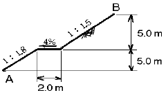
- 8.1m
- 17.5m
- 18.5m
- 19.5m
(정답률: 알수없음)
30. 교점(I.P.)의 위치가 기점으로부터 143.25m 일 때 곡률반경 150m, 교각 58° 14′ 24″ 인 단곡선을 설치하고자 한다면 곡선시점의 위치는? (단, 중심말뚝 간격 20m)
- No.2 + 3.25
- No.2 + 19.69
- No.3 + 9.69
- No.4 + 3.56
(정답률: 알수없음)
31. 촬영고도 3,000m, 사진 I의 주점기선장 59mm, 사진 II의 주점기선장 61mm 일 때 시차차 2.5mm 인 두 점간의 고저차는 얼마인가 ?
- 75m
- 100m
- 125m
- 150m
(정답률: 알수없음)
32. 다음은 수준측량에 관한 설명이다. 틀린 것은 ?
- 우리나라에서는 인천만의 평균해면을 표고의 기준면으로 하고 있다.
- 수준측량에서 고저의 오차는 거리의 제곱근에 비례한다.
- 중간점이 많을때 편리한 야장기입법은 고차식이다.
- 종단측량은 일반적으로 횡단측량보다 높은 정확도를 요구한다.
(정답률: 알수없음)
33. 어느 고속도로를 시속 100km/h로 주행하기 위하여 필요로 하는 캔트(cant)는 얼마인가? (단, 곡선반경 : 400m, 궤간 : 15m)
- 2.95m
- 3.54m
- 4.12m
- 5.64m
(정답률: 알수없음)
34. 다음 지형측량 방법 중 기준점측량에 해당되지 않는 것은?
- 수준측량
- 트래버스측량
- 삼각측량
- 스타디아측량
(정답률: 알수없음)
35. 트래버스측량에서는 측각의 정도와 측거의 정도가 균형을 이루어야 한다. 지금 측거 100m 에 대한 오차가 ± 2mm일 때 각관측오차는 얼마인가 ?
- ± 2"
- ± 4"
- ± 6"
- ± 8"
(정답률: 알수없음)
36. 수위관측소의 설치장소 선정 중 틀린 것은 ?
- 수위가 교각이나 기타구조물에 의한 영향을 받지 않는 장소일 것
- 홍수시에도 양수량을 쉽게 볼 수 있을 것
- 잔류, 역류 및 저수가 많은 장소일 것
- 하상과 하안이 안전하고 퇴적이 생기지 않는 장소일 것
(정답률: 알수없음)
37. 수준측량에서 경사거리 S, 연직각이 α 일 때 두 점간의 수평거리 D는 ?
- D = S sin α
- D = S cos α
- D = S tan α
- D = S cot α
(정답률: 알수없음)
38. 직접법으로 등고선을 측정하기 위하여 B점에 레벨을 세우고 표고가 75.25m인 P점에 세운 표척을 시준하여 0.85m를 측정했다. 68m인 등고선 위의 점 A를 정하려면 시준하여야 할 표척의 높이는 ?
- 8.1m
- 5.6m
- 6.7m
- 9.5m
(정답률: 알수없음)
39. 다음중 기지의 삼각점을 이용한 삼각측량의 순서는 어느 것인가?
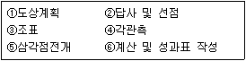
- ①→ ②→ ③→ ④→ ⑤→ ⑥
- ②→ ①→ ③→ ⑥→ ⑤→ ④
- ②→ ①→ ③→ ④→ ⑤→ ⑥
- ①→ ②→ ③→ ⑤→ ④→ ⑥
(정답률: 알수없음)
40. 거리가 450m 인 두점 사이를 50m Tape를 사용하여 측정할 때 Tape 1회 측정의 정오차가 3mm, 우연오차가 2mm 일 때 전 길이의 확률오차는 ?
- 27.66mm
- 21.66mm
- 17.66mm
- 31.66mm
(정답률: 알수없음)
3과목: 응용역학
41. 그림과 같이 천정에 두끈을 매고 10kgf의 물체를 매달았을 때 두끈의 인장력 T1, T2의 합은?
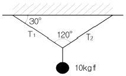
- 20kgf
- 11.55kgf
- 10kgf
- 17.32kgf
(정답률: 알수없음)
42. 다음 그림과 같이 직교좌표계 위에 있는 사다리꼴 도형 OABC 도심의 좌표는 ?
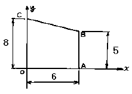
- (2.54, 3.46)
- (2.77, 3.31)
- (3.34, 3.21)
- (3.54, 2.74)
(정답률: 알수없음)
43. 지름 5㎝, 길이 200㎝의 강봉을 15mm만큼 늘어나게 하려면 얼마의 힘이 필요한가? (단, E = 2,100,000 kgf/㎝2)
- 3⑤ tonf
- 307 tonf
- 309 tonf
- 311 tonf
(정답률: 알수없음)
44. 아래 그림에서 P1 과 P2 의 크기는 ?
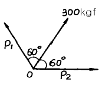
- P1 = P2 = 100 ㎏f
- P1 = P2 = 150 ㎏f
- P1 = P2 = 300 ㎏f
- P1 = P2 = 600 ㎏f
(정답률: 알수없음)
45. 다음 그림과 같은 트러스에서 DE부재의 부재력은 ?
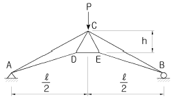
- Pℓ /4h
- 2Pℓ /3h
- Pℓ /2h
- 3Pℓ /4h
(정답률: 알수없음)
46. 단순지지 보의 B 지점에 우력 모멘트 Mo가 작용하고 있다. 이 우력 모멘트로 인한 A 지점의 처짐각 θa 를 구하면 ?
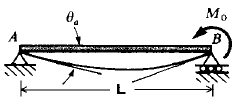
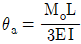
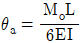
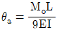
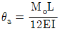
(정답률: 알수없음)
47. 등분포하중을 받는 직사각형단면의 단순보에서 최대처짐에 대한 설명으로 옳은 것은 ?
- 보의 폭에 정비례한다.
- 지간의 3제곱에 비례한다.
- 탄성계수에 반비례한다.
- 보의 높이의 2제곱에 반비례한다.
(정답률: 알수없음)
48. 경간 ℓ =8m, 단면 30× 40cm 되는 단순보의 중앙에 10tonf 되는 집중하중이 작용할 때 최대 휨응력은 ?
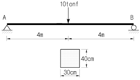
- 200 kgf/cm2
- 250 kgf/cm2
- 300 kgf/cm2
- 350 kgf/cm2
(정답률: 알수없음)
49. 캔틸레버보의 점 B 에 연직하중 P 가 작용 할 때 점 B 와 점 C 의 처짐각 θB와 θC의 비는?
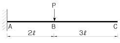
- 1 : 1
- 2 : 3
- 4 : 7
- 4 : 9
(정답률: 알수없음)
50. 그림과 같은 정정 아치(arch)의 지점 A의 수평반력은 ?
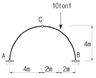
- 1 tonf
- 1.5 tonf
- 2 tonf
- 2.5 tonf
(정답률: 알수없음)
51. Euler 공식을 적용하는 일단 고정, 타단 활절인 장주에서 탄성계수 E = 210000 kgf/cm2, 단면폭 b =15 cm, 단면높이 h =30cm, 기둥길이 ℓ =18m 이다. 이때 최소 좌굴 하중 Pb 값은 ?
- 5.4 tonf
- 10.8 tonf
- 20.6 tonf
- 43.1 tonf
(정답률: 알수없음)
52. 그림과 같은 원통형 단면 기둥의 길이가 L=20m일 때 이 기둥의 세장비는 ?
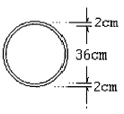
- 13.45
- 1.490
- 148.7
- 74.3
(정답률: 알수없음)
53. 다음 그림에 보이는 연속보의 중앙 지점에서의 휨모멘트를 구하면 ? (단, EI는 일정하다.)
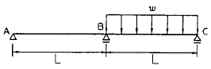
- -wL2/10
- -wL2/13
- -wL2/16
- -wL2/18
(정답률: 알수없음)
54. 에너지 불변의 법칙을 옳게 기술한 것은?
- 탄성체에 외력이 작용하면 이 탄성체에 생기는 외력의 일과 내력이 한 일의 크기는 같다.
- 탄성체에 외력이 작용하면 외력의 일과 내력이 한 일의 크기의 비가 일정하게 변화한다.
- 외력의 일과 내력의 일이 일으키는 휨모멘트의 값은 변하지 않는다.
- 외력과 내력에 의한 처짐비는 변하지 않는다.
(정답률: 알수없음)
55. 다음 단면에서 직사각형 단면의 최대 전단응력은 원형단면의 최대 전단응력의 몇배인가? (단, 두단면의 단면적과 작용하는 전단력의 크기는 같다.)
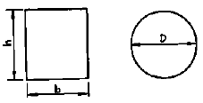
- 9/8 배
- 8/9 배
- 5/6 배
- 6/5 배
(정답률: 알수없음)
56. 다음 그림과 같은 도형의 x축에 대한 단면 2차모멘트는?
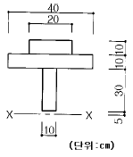
- 27,500cm4
- 144,200cm4
- 1,265,000cm4
- 1,287,500cm4
(정답률: 알수없음)
57. 그림과 같은 게르버보의 A점의 휨모멘트는 ?
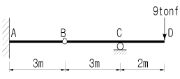
- 72 tonf·m
- 36 tonf·m
- 27 tonf·m
- 18 tonf·m
(정답률: 알수없음)
58. 다음 그림에서 연행 하중으로 인한 최대 반력 RA 는 ?
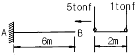
- 6 tonf
- 5 tonf
- 3 tonf
- 1 tonf
(정답률: 알수없음)
59. 다음 부정정보에서 지점B의 수직 반력은 얼마인가 ? (단, EI는 일정함)
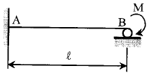
- M/ℓ (↑)
- 1.3(M/ℓ) (↑)
- 1.4(M/ℓ) (↑)
- 1.5(M/ℓ) (↑)
(정답률: 알수없음)
60. 다음 그림과 같이 인장력을 받는 막대에서 최대 전단력을 갖는 경사면 θ 와 그 크기는? (단, σ 는 X 단면에서의 수직응력이다.)
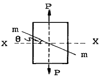
- 15° 에서 σ
- 30° 에서 σ/4
- 45° 에서 σ/2
- 60° 에서 σ/3
(정답률: 알수없음)
4과목: 건설재료 및 시공
61. Bulldozer의 작업량 산출식에서 Cm을 구한 값은? (단, 작업거리 60m, 전진속도 40m/min, 후진속도 50m/min, 기어변환시간 0.5min)
- 1.2 min
- 2.2 min
- 3.2 min
- 4.2 min
(정답률: 알수없음)
62. 다음중 성토 재료로서 적당하지 않은 흙은 ?
- 함수비가 액성한계를 넘은 흙
- 안정에 필요한 전단강도를 가지고 있는 흙
- 압축성이 적은 흙
- 시공기계의 트레피커빌리티(Trafficability) 확보 등 시공이 용이한 흙
(정답률: 알수없음)
63. 파이프 또는 와이어의 끝에 붙인 저항체를 지중에 삽입하여 이에 관입, 회전, 인발 등의 힘을 가하여 그 저항치에서 토층의 상태를 알 수 있는 방법은 ?
- Boiling
- Sounding
- CBR
- Sampler
(정답률: 알수없음)
64. 아직 굳지 않은 콘크리트에 물이 떠오르고 이 현상으로 하여 생기는 침전된 미세한 물질을 무엇이라고 하는가 ?
- 블리딩
- 콘시스턴시
- 레이턴스
- 워커빌리티
(정답률: 알수없음)
65. 토공의 굴착작업에 사용하는 기계로서 적당하지 않은 기계는 ?
- 스태빌라이저(Stabilizer)
- 백호우(Back Hoe)
- 트렌처(Trencher)
- 크램셀(Clam Shell)
(정답률: 알수없음)
66. 콘크리트는 신속하게 운반하여 즉시 치고 충분히 다져야 한다. 비비기로부터 치기가 끝날 때까지의 시간은 원칙적으로 외기온도가 25℃ 이하일 때 얼마를 넘어서는 안되는가?
- 1시간
- 1.5시간
- 2시간
- 2.5시간
(정답률: 알수없음)
67. 시멘트 모르타르 흐름 시험은 다음 중 어느 시험을 하기 위한 시험인가 ?
- 시멘트 모르타르 응결시간시험
- 시멘트 모르타르 압축강도시험
- 시멘트 비중시험
- 안정성(Soundness)시험
(정답률: 알수없음)
68. 연속적인 대량의 콘크리트 타설시 작업이음(Work joint)의 방지 또는 콘크리트의 운반시간이 긴 경우 효과적인 혼화제는 다음중 어느 것인가?
- 감수제
- 염화칼슘
- 규산나트륨
- 지연제
(정답률: 알수없음)
69. Sand Drain 공법의 주된 목적은 다음 중 어느 것인가?
- 투수계수의 감소
- 압밀침하 촉진
- 공극수압의 증대
- 말뚝관입 효과 촉진
(정답률: 알수없음)
70. 시멘트의 화합물에 대한 설명 중 옳지 않은 것은?
- 알루민산 3석회는 초기응결이 빠르고 수축이 커서 균열이 잘 일어난다.
- 규산 2석회는 수화열이 작으므로 수축이 작으며 장기 강도가 크다.
- 규산 3석회는 초기강도를 좌우하며 응결이 빠르다.
- 알루민산 철 4석회는 수화속도가 빠르고 수화열이 많아 수축이 크다.
(정답률: 알수없음)
71. 콘크리트용 골재의 함수량에 대한 사항 중 옳은 것은?
- 콘크리트의 배합을 나타낼 때는 골재가 표면건조 포화상태 일 때이다.
- 비중이 큰 골재는 흡수량이 크다.
- 굵은 골재는 잔골재보다 흡수량이 크다.
- 표면수량은 흡수량에서 함수량을 뺀 값이다.
(정답률: 알수없음)
72. 다음 석재 중 구조용 재료로 가장 적합한 것은?
- 사암
- 섬록암
- 대리석
- 편마암
(정답률: 알수없음)
73. 용수, 배수 등 성질이 다른 수로가 교차하여 합류가 가능하고 수로교의 설치가 어려울 경우에 설치하면 편리한 암거는?
- 사이폰암거
- 함거
- 아치암거
- 철근콘크리트암거
(정답률: 알수없음)
74. 도화선 연소속도는 m당 얼마가 기준인가 ?
- 80초/m-100초/m
- 120초/m-140초/m
- 150초/m-180초/m
- 200초/m-250초/m
(정답률: 알수없음)
75. 토량의 변화율이 L=1.1, C=0.9인 흙을 굴착운반하여 40000m3를 성토할 때 운반토량은 얼마인가 ?
- 44,000m3
- 48,889m3
- 36,363m3
- 44,444m3
(정답률: 알수없음)
76. 다음중 열경화성 수지인 것은?
- 아크릴 수지
- 폴리에틸렌 수지
- 요소수지
- 불소수지
(정답률: 알수없음)
77. 옹벽의 안정조건과 가장 거리가 먼 것은?
- 활동에 대한 안정
- 수압에 대한 안정
- 전도에 대한 안정
- 지지력에 대한 안정
(정답률: 알수없음)
78. 체가름 시험에서 조립률(FM)=2.9인 잔골재와 조립률(FM)=7.30인 굵은 골재를 1:1.5의 무게비로 섞을 때 혼합골재의 조립률을 구한 값은?
- 4.73
- 5.54
- 5.95
- 5.98
(정답률: 알수없음)
79. 다음 폭약 중 폭파력이 가장 강하고 수중에서도 폭발하는 것은?
- 규조토 다이나마이트
- 스트레이트 다이나마이트
- 분상 다이나마이트
- 교질 다이나마이트
(정답률: 알수없음)
80. 한중 콘크리트나 해중공사에 가장 적당한 시멘트는?
- 알루미나 시멘트
- 실리카 시멘트
- 고로 시멘트
- 중용열 포틀랜드 시멘트
(정답률: 알수없음)
5과목: 철도보선관계법규
81. 다음 정거장 설비에 대한 설명으로 옳지 않은 것은?
- 본선의 유효장은 철도청장이 정한다.
- 승강장은 직선상에 설치하는 것이 원칙이다.
- 승강장의 높이는 레일윗면으로부터 500mm로 하여야 한다.
- 1급선의 전차대 길이는 24m가 표준이다.
(정답률: 알수없음)
82. 시설관리사무소장은 사고복구용 비상자재 중 보통 침목은 몇개를 확보하여야 하는가 ?
- 100개
- 200개
- 300개
- 400개
(정답률: 알수없음)
83. 나사 스파이크를 박을때 천공용 드릴로 뚫는 구멍의 깊이는?
- 100mm
- 110mm
- 120mm
- 130mm
(정답률: 알수없음)
84. 도상자갈 살포시 운전 주행속도는 몇 km/h 이하로 하여야 하는가 ?
- 25 km/h
- 20 km/h
- 15 km/h
- 10 km/h
(정답률: 알수없음)
85. 레일앵카 작업 설명 중 틀린 것은? (단, 국철의 경우임)
- 연간 밀림량이 15mm를 초과하는 개소에 시행
- 설치방법은 산설식을 원칙
- 부설은 가급적 유간정리 직후 시행
- 붙이는 작업은 보통 2인 또는 3인 협동으로 시행
(정답률: 알수없음)
86. 선로구간의 종별에 따른 레일 및 도상의 치수 중 옳지 않은 것은 ? (단, 정차장외의 본선일 경우)
- 1급선 60㎏레일, 도상두께 300mm
- 2급선 60㎏레일, 도상두께 280mm
- 3급선 50㎏레일, 도상두께 270mm
- 4급선 50㎏레일, 도상두께 250mm
(정답률: 알수없음)
87. 분기기의 보조재료로서 시설하는 것이 아닌 것은 ?
- 게이지 타이롯드(gauge tierod)
- 게이지 스트랏트(gauge strut)
- 포인트 가드레일 또는 포인트 프로텍터
- 자동연결기 넉클
(정답률: 알수없음)
88. 본선의 인접한 두 곡선간에는 캔트(cant)체감후에 다음의 길이 이상의 직선을 삽입하여야 하는데 다음중 옳지 않은 것은 ?
- 1급선 : 100 m
- 2급선 : 80 m
- 3급선 : 60 m
- 4급선 : 20 m
(정답률: 알수없음)
89. 선로장애에 해당되지 않는 것은 ? (단, 국철의 경우임)
- 선로내 긴말뚝을 박을 경우
- 선로를 횡단하여 높고 무거운 물건을 이동하는 경우
- 암석, 토사를 선로부근에서 무너뜨리는 경우
- 선로를 무단 보행하는 것
(정답률: 알수없음)
90. 다음에서 도상 다짐으로 틀린 것은 ?
- 도상을 긁어낼 깊이는 특히 필요한 경우를 제외하고는 다짐에 지장되지 않는 범위로 한다.
- 다짐 넓이는 레일 중심에서 좌우 각 300mm - 400mm로 한다.
- 침목위치가 불량한 것은 다짐후에 정정한다.
- 작업인원은 3인 이상으로 보통 5인 협동 시행한다.
(정답률: 알수없음)
91. 슬랙에 관한 설명 중 옳지 않은 것은 ? (단, 국철)
- 반경 600m 이하의 곡선구간에 붙인다.
- 슬랙은 20mm를 초과하지 못한다.
- 완화곡선에서 슬랙의 체감은 그 전연장에서 한다.
- 완화곡선이 없는 경우에는 캔트의 체감길이와 같은 길이로 체감하여야 한다.
(정답률: 알수없음)
92. 선로의 급곡선이나 급구배 또는 노반연약 등 열차의 안전운행이 필요한 구간에는 침목배치 정수를 증가할 수 있다. 곡선의 경우 반경 몇 m 미만 부터 해당되는가 ?
- 600m
- 500m
- 400m
- 300m
(정답률: 알수없음)
93. 궤도보수 점검에서 궤도검측차의 본 점검은 전본선을 년 몇 회 시행하는 것이 원칙인가 ?
- 1회
- 2회
- 3회
- 4회
(정답률: 알수없음)
94. 선로점검규정에서 제시하고 있는 레일점검 사항에 포함되지 않는 것은 ?
- 레일의 손상, 마모 및 부식정도
- 돌려놓기 또는 바꿔놓기 필요의 유무
- 레일의 종별 상태
- 가공레일의 가공상태 적부
(정답률: 알수없음)
95. 2급선 선로의 본선 노반의 부담력 계산에 사용되는 표준 활하중은 ?
- L-22
- E-22
- S-22
- KS-22
(정답률: 알수없음)
96. 50㎏ N 레일의 경우 레일두부의 마모한도(직마모)는 몇 mm 인가 ? (단, 국철의 경우임.)
- 7
- 9
- 12
- 15
(정답률: 알수없음)
97. PC침목 교환작업에 대한 설명중 옳지 않은 것은 ?
- 목침목과 PC침목을 섞어서 부설하여서는 안된다.
- 침목교환구간은 도상다지기를 하여야 한다.
- 이음매부에는 현접법으로 목침목을 부설한다.
- 혹서기에는 작업제한 규정을 엄수한다.
(정답률: 알수없음)
98. 운전사고시 출동태세를 확립하기 위하여 매분기마다 점검하여야 할 사항에 해당되지 않는 것은 ?
- 기중기 배치 및 기능
- 비상차의 적재품 현황
- 출동훈련 실적
- 복구예산 편성여부
(정답률: 알수없음)
99. 국철에서 장비의 검수종별 중 옳지 않은 것은 ?
- 일상검수
- 15일검수
- 임시검수
- 특종검수
(정답률: 알수없음)
100. 다음 중 궤도재료 점검에 해당 하지 않는 것은 ?
- 목침목점검
- 노반점검
- 분기기점검
- 도상점검
(정답률: 알수없음)